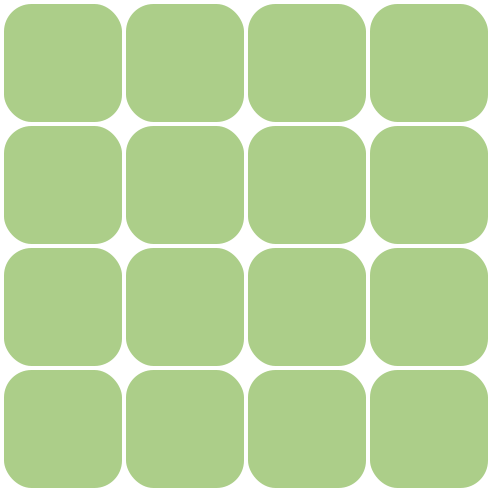
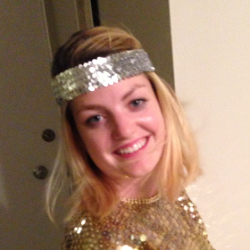

<div class="modal fade">
  <div class="modal-dialog">
    <div class="modal-content">
      <div class="modal-header">
        <button type="button" class="close" ng-click="myClose()" aria-hidden="true">&times;</button>
        <h4 class="modal-title">Anna's Garden</h4>
      </div>
      <div class="modal-body">
          <div class="modal-split">
            
          </div>
          <div class="modal-split">
            <div class="row">
              <ul class="chip-container">
                <!-- TODO use this for chips https://github.com/B1naryStudio/md-chips-->
                <li class="chip">Carrots</li>
                <li class="chip">Peas</li>
                <li class="chip">Apple</li>
              </ul>
            </div>
            <div class="row text-right">
              
              <h5>Anna Lotko</h5>
              <p>I love gardening accessories and potatoes. Come check-out my heirloom tomatoes!</p>
            </div>
          </div>
        </div>
      </div>
      <!-- <div class="modal-footer">
        <button type="button" ng-click="myClose()" class="btn btn-primary">Submit</button>
      </div> -->
    </div>
  </div>
</div>
